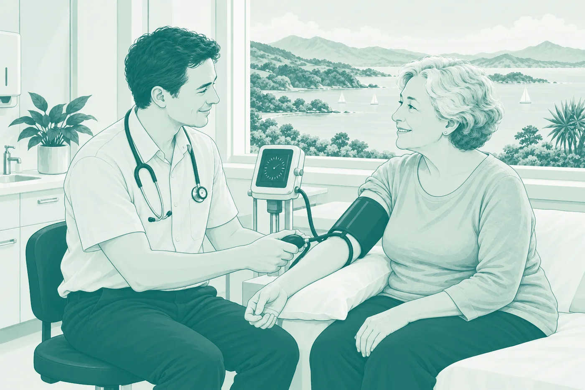

Stage 04 · Can I work there? · Medical Council of New Zealand
Registering with the Medical Council
For international medical graduates — resident doctors and specialists alike. Three scopes, a pathway inside each, and a sequence that runs from a job offer through verification to a meeting in New Zealand before you can practise. The checklist is built into the page, so nothing you tick goes out of date.
 Kettle on. A longer read — about 21 min
Kettle on. A longer read — about 21 min
Download the PDF guide15 pages · 2.5 MB

At a glance
General (resident doctors, RMOs, doctors in training), vocational (independent specialists) and special purpose (temporary). Which pathway you use depends on where you trained and where you have practised.
The pathways most international doctors use require one — with supervision for the comparable health system route, at consultant level for the specialist fast-track — and your employer completes part of the application.
Your qualifications must be verified at source through EPIC before the Council will start on your file. Begin it early; it is the slowest step you control.
A registration meeting after you arrive confirms identity and supervision. Only then is registration granted and a practising certificate issued — and most international graduates start under supervision. Not all: Australian graduates who completed an internship in Australia, and holders of approved Australasian postgraduate qualifications, may not be required to.
What’s inside
Read it once to understand the shape of the journey, then come back to each section as you reach it. The checklist at the end remembers what you have ticked, on this device.
- Understanding the Council
- The three scopes
- General scope: which pathway is yours
- Vocational scope: registering as a specialist
- Primary source verification
- References, English and fitness
- Applying with your employer
- The registration meeting and your practising certificate
- Working under supervision, and progression
- Where people get stuck
- Questions we are asked most
- The whole journey on one page
- The checklist — 32 items, tickable
Section 01
Understanding the Council
The Medical Council of New Zealand — Te Kaunihera Rata o Aotearoa — registers doctors under the Health Practitioners Competence Assurance Act 2003 and is responsible for their competence, conduct and fitness to practise. Any doctor applying for registration must be fit for registration and fit to practise medicine; the Council determines this as part of assessing every application.
Registration, scope and practising certificate
Registration places you in a scope of practice. A practising certificate is what lets you work, and for international graduates it carries an endorsement naming your approved employment and supervision. You cannot practise until registration is confirmed and the certificate is issued, and you can only work within what the certificate says.
Start with the self-assessment tool
The Council publishes an online registration self-assessment tool that points you to the pathway you may be eligible for. It is the right first step before you gather a document or ask an employer for anything.
Section 02
The three scopes
The Council has three main types of registration, which it calls scopes. Within each there are several pathways, and each pathway has its own requirements.
General scope
Preceded by a provisional general period under supervision. The scope most international doctors below consultant level register in.
Vocational scope
Permanent, specialist registration. International graduates enter through a provisional vocational period under supervision, then apply for the change of scope.
Special purpose scope
Six categories: locum tenens, teleradiology, visiting expert, postgraduate training, research, and other special purposes such as a disaster or pandemic. Also supervised. Locum tenens, for twelve months or less, is a mainstream clinical route — but none of these is the way into a permanent post.
Whether you enter a provisional general, provisional vocational or special purpose scope, you work under a Council-approved supervisor while you become familiar with the New Zealand health system and its expected standard of practice.
Section 03
General scope: which pathway is yours
Five pathways for doctors who trained outside New Zealand and Australia. Which one applies depends on where you qualified, where you are registered and where you have recently practised.
UK and Irish medical graduates
A primary medical degree from the UK or Ireland, with your internship completed there.
Recent experience in one of 29 recognised countries
At least 33 months of clinical practice, at 20 or more hours a week, in the 48 months before you apply — in the same or a similar area of medicine, at a similar level of responsibility to the New Zealand post — plus current full or general registration in one of those systems. A separate set of prerequisites exists for general practitioners with a recent postgraduate GP qualification.
NZREX Clinical, PLAB 1 and 2, or the AMC exams
Passed within the last five years. This route also needs a job offer as a PGY1 in accredited clinical attachments with an accredited training provider, leading into the two-year prevocational training programme.
PLAB, 12 months of UK practice, full GMC registration
PLAB Parts 1 and 2 passed within the last five years, full GMC general registration, and 12 months of UK practice that must be Foundation Year 1, FY2 stand-alone, or 12 months in an Approved Practice Setting. Progression also needs ACLS certification within the last 12 months and a minimum three-month supervision period before your supervisor can recommend you.
AMC examinations and Ahpra registration
Passed the Australian Medical Council examinations and registered with Ahpra.
The Council publishes the 29 comparable health systems and its criteria for them, and it adds countries from time to time. Whether your country is on it — and whether your recent months meet the 33-of-48 test at 20 hours a week — is what decides this pathway, not where you were born or trained.
Section 04
Vocational scope: registering as a specialist
Four pathways. Two are for doctors who already hold an approved New Zealand or Australasian postgraduate qualification; the other two are for specialists trained elsewhere.
Approved New Zealand or Australasian qualification
VOC1 if you already hold general scope registration; VOC2 if you do not.
Trained and qualified as a specialist outside New Zealand and Australia
The Council assesses your training and qualifications on their merits, usually with advice from the relevant New Zealand college.
Approved UK, Irish or Australian postgraduate qualification
For specialists intending to work in an approved area of medicine. Prerequisites: an acceptable primary medical qualification; a postgraduate qualification on the Council’s approved list; at least 24 months’ clinical experience at 0.5 FTE or more in the past five years in that area, including 12 months within the last 18, in a comparable health system; and a job offer at consultant or specialist level. The Council states a processing time of 20 working days from a complete application; psychiatry may take longer.
Provisional first, vocational after
A successful international application leads to a provisional vocational period under supervision, during which the Council satisfies itself that you are competent to practise independently in your field. When you have completed the requirements it sets, you apply for the change of scope to vocational registration. Obstetrics and gynaecology, psychiatry and anatomical pathology carry additional information requirements.
The VOC4 list of approved postgraduate qualifications is a live document — the Council has added chemical pathology, haematology and microbiology to it. Confirm your qualification and area of medicine are on the current version before you plan around the fast-track.
Section 05
Primary source verification
Since November 2017 the Council has required key documents to be verified directly with the institution that issued them, through ECFMG’s EPIC service — now accessed via the MyIntealth portal.
You must start this before you submit your application. The verification can take time, and the Council cannot begin processing until it has evidence that it is under way. Of everything in this guide it is the step most worth starting the day you decide to apply, because nothing you or your employer do afterwards can shorten it.
- 1
Create your EPIC account
Through the MyIntealth portal; ECFMG publishes instructions specific to New Zealand applicants.
- 2
Request verification of your primary medical qualification
EPIC contacts your medical school directly.
- 3
Request verification of your postgraduate qualification
If you are applying for a vocational scope.
- 4
Keep the evidence that verification is under way
It goes in with your application.
Section 06
References, English and fitness
The independent evidence behind your application — and the three things most often left late.
Three, on the Council’s referee report form
The Council describes authentic, authoritative and comprehensive references as necessary to its decisions on fitness and competence, and the references go on its own RP6 referee report form. Who verifies them depends on the scope you are applying for: normally your prospective employer must make a declaration and provide evidence of having verified the reference. For provisional vocational and vocational applications the Council contacts the referee directly. Brief your referees either way.
The Council’s English language policy
Every applicant must satisfy the Council that they can comprehend and communicate effectively in English in the medical workplace. The policy sets out the routes and any test requirement; scores are not reproduced here because the policy is revised. Check it before booking, and time any test to stay valid.
Health, conduct and competence
A legal requirement on the Council. Full, honest disclosure of anything relevant — even matters you consider minor or resolved — is always the right approach; non-disclosure is treated far more seriously than the underlying matter usually is.
Section 07
Applying with your employer
Applications are made online through the Council’s portal, myMCNZ, and you complete them with your employer — some documents can only be completed by them.
Your employer applies for approval of the position and of your supervisor on the Council’s form for your pathway, and the Council publishes a checklist for each pathway listing exactly what to submit. Processing times run from the date the Council receives a complete application, so the checklist is worth reading twice.
- 1
Request a PIN and create your myMCNZ account
- 2
Work through the Council’s checklist for your pathway
Every document it lists, certified where required, clearly named.
- 3
Your employer completes the approval of position and supervisor form
Naming your post and your Council-approved supervisor.
- 4
Submit, with the fee
Fees are published on the Council’s forms, fees and checklists page and revised; confirm before you pay.
- 5
Respond to any request promptly
The biggest factor within your control once the file is in.
- 6
Receive your eligibility for registration letter
It confirms for other agencies — Immigration New Zealand among them — that you can be registered, and gives you instructions for your registration meeting.
Section 08
The registration meeting and your practising certificate
Every international medical graduate coming to practise in New Zealand for the first time attends a registration meeting, and must be able to produce the information the Council has asked for.
The meeting confirms your identity, completes the registration formalities, takes your application for a practising certificate and settles your supervision. For the VOC4 fast-track it takes place within two weeks of your intended start date, and only once you have arrived in New Zealand. After the meeting, and once payment for the practising certificate is received, the Council grants registration in your provisional scope and issues the certificate — allow three days.
Registration must be confirmed and the practising certificate in your hands, and you may only work within the endorsement and any conditions noted on it. Plan your start date around the meeting, not the flight.
Section 09
Working under supervision, and progression
The provisional period is where the Council satisfies itself that you are ready for the scope you applied for. Three rules shape it.
- 1
Supervision is required
In every provisional general, provisional vocational and special purpose scope, under a Council-approved supervisor.
- 2
Variations before any change
Your practising certificate endorses a specific employment, supervision, position and location. If any of them change you apply for a variation at least 20 working days in advance, and wait for the Council’s approval before starting under the new arrangement.
- 3
Progression is applied for, not automatic
Provisional general to general depends on which pathway brought you in. On the comparable health system and UK general registrant routes: 12 months full-time equivalent, three satisfactory supervision reports covering the nine months immediately before you apply, and your supervisor’s recommendation. On the Competent Authority pathway for UK and Irish graduates it is shorter — six months full-time equivalent and two consecutive satisfactory reports. If you have not met them within 12 months you continue under supervision until you have. Provisional vocational to vocational: once you have completed the requirements Council set for you.
Conditions on the general scope
Your general scope is limited to the area of medicine you worked in during the provisional period — unless that was general practice, which carries no limitation. An unlimited general scope needs six months full-time equivalent of supervised practice in medicine and six months in surgery during your provisional general scope — and no more than three months of that medicine may be emergency medicine. Once in the general scope you are no longer supervised, but you must meet the Council’s recertification requirements through the Inpractice programme or an accredited vocational training programme.
Where people get stuck
Almost every avoidable delay traces back to one of these
Verification started late
EPIC runs at the pace of your medical school. The Council cannot start until it is under way.
Counting months that do not count
The comparable health system test is 33 of the last 48 months, at 20 hours a week, in a similar area and level. Locum weeks or a different specialty may not qualify.
Assuming the label, not the list
A country you think of as comparable may not be on the Council’s list; a qualification you think of as approved may not be on the VOC4 list.
Applying without a job offer
The comparable health system and VOC4 pathways need one — with supervision, or at consultant level.
Referees left unbriefed
At least three references, on the Council’s RP6 form. Your employer verifies them for general and special purpose scopes; the Council does it directly for vocational. A slow referee is a slow application.
Booking the flight around the offer, not the meeting
Registration is granted after the meeting in New Zealand, and the certificate follows payment.
The fix for all of these
Run the self-assessment, start verification the same day, secure the offer, brief your referees, and read the Council’s checklist for your pathway twice before you and your employer submit.
Section 11
The questions we are asked most
Which scope should I apply for?
General scope (through a provisional general period) if you will work as a resident doctor, RMO or in vocational training. Vocational scope (through a provisional vocational period) if you will work independently as a specialist. Special purpose is temporary, for research, training or disaster assistance. The Council’s online self-assessment tool points you to the pathway you may be eligible for.
I trained in the UK or Ireland. Which pathway is mine?
For general scope, the Competent Authority pathway if your primary medical degree and internship were in the UK or Ireland; or UK general registrants if you passed PLAB Parts 1 and 2, completed 12 months of satisfactory UK practice and hold full GMC registration. For specialists, an approved UK or Irish postgraduate qualification may qualify you for the VOC4 fast-track.
What counts as a comparable health system?
The Council keeps a list — currently 29 countries — assessed against health system infrastructure, population health outcomes and the medical regulatory framework. For the general-scope pathway you need at least 33 months of clinical practice, at 20 or more hours a week, in the 48 months before you apply, in one or more of those systems, in a similar area of medicine and at a similar level of responsibility to the New Zealand post.
Do I need a job offer before I apply?
Yes, on the pathways most international doctors use. The comparable health system pathway requires a job offer that includes supervision, and the VOC4 fast-track requires a job offer at consultant or specialist level. You complete the application with your employer, because some documents can only be completed by them.
What is primary source verification?
The Council requires key documents — your primary medical qualification and, for specialists, your postgraduate qualification — to be verified directly with the institution that issued them, through ECFMG’s EPIC service (accessed via the MyIntealth portal). Start it before you submit: the Council cannot begin processing until it has evidence the verification is under way.
How long does the Council take?
For a complete VOC4 fast-track application the Council states 20 working days, with psychiatry applications possibly taking longer. For other pathways the Council publishes its own processing times, which run from receipt of a complete application. The slow parts are usually outside the Council — primary source verification and references.
What is the registration meeting?
A meeting with the Council after you arrive in New Zealand — for VOC4 within two weeks of your intended start date — to confirm your identity, complete formalities, apply for your practising certificate and agree your supervision. Registration is granted after the meeting and payment; allow three days for the practising certificate. You cannot practise until you hold it.
Will I be supervised?
Yes. Every international medical graduate registered in a provisional general, provisional vocational or special purpose scope must work under supervision while they become familiar with the New Zealand health system. Your practising certificate carries an endorsement naming the approved employment and supervision; any change needs a variation approved by the Council, applied for at least 20 working days in advance.
How do I move from provisional general to general scope?
It is not automatic. You apply once you have completed 12 months full-time equivalent in the provisional general scope, received three satisfactory supervision reports for the nine months immediately before applying, and been recommended by your Council-approved supervisor. Your general scope is then limited to the area you worked in, unless it was general practice or you completed six months each of supervised medicine and surgery.
Can Ethicare review my application?
Yes. We help you identify the pathway, sequence primary source verification and references so nothing waits on anything else, and read the file against what the Council asks for before you and your employer submit. The registration decision always rests with the Medical Council.
Section 12
The whole journey on one page
From first decision to first shift. Each stage links to the section that explains it; the checklist tracks the same stages.
- Before you start
Self-assessment, scope, pathway
The Council’s tool first; then general or vocational, and the pathway inside it. Sections 02–04
- Before you start
Secure the job offer
With supervision, or at consultant level. Your employer is part of the application. Section 07
- Start today
Primary source verification
EPIC via MyIntealth. Nothing starts at the Council until this is under way. Section 05
- Preparing
References, English, fitness
Three referees on the Council’s form; the English policy checked; full disclosure. Section 06
- Applying
Submit via myMCNZ with your employer
Complete against the Council’s checklist, with the fee. Section 07
- Milestone
Eligibility for registration letter
The document Immigration New Zealand relies on.
- Arrive
Registration meeting
Identity, formalities, supervision; then registration and the practising certificate. Section 08
- Then
Supervised practice, then change of scope
12 months and three reports for general scope; the Council’s set requirements for vocational. Section 09
- Then
The life around the job
Where registration hands over to planning your move.
The checklist
Thirty-two items, in the order you will meet them
Tick as you go. Ticks are saved on this device only — nothing is sent to us — and the list is always the current version, which a downloaded copy never is.
01Before you start
Scope, pathway and a job offer — in that order.
02Check the pathway prerequisites
Each pathway has its own tests. These are the ones most international doctors meet.
03Primary source verification — start this first
The Council cannot begin processing until it is under way.
04References, CV and English
The independent evidence.
05Apply with your employer
Some documents can only be completed by them.
06Arrive, meet, register
Registration is confirmed in New Zealand, not before.
07Under supervision, then progression
What the provisional period asks of you.
What next?
Registration is one part of the decision
How we help
We can read it before the Council does
We help you identify the pathway, sequence verification and references so nothing waits on anything else, and read the file against the Council’s checklist before you and your employer submit. We support and guide you through the process; the registration decision always rests with the Medical Council of New Zealand.